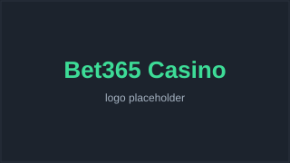
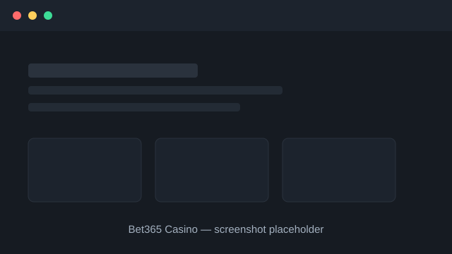

Bet365 Casino Review 2026

Last updated: · By Michael Turner, Senior Casino Analyst
Verdict
Bet365 Casino scores 4.7 out of 5. It is best for players who want a large, well-run live casino backed by one of the world's biggest gambling operators and consistently fast withdrawals. Its main drawback is that promotions are less generous than smaller rivals chasing new sign-ups.
Bet365 Casino quick facts
| Overall rating | |
|---|---|
| Founded | 2000 |
| Operator | bet365 Group Ltd |
| Headquarters | Stoke-on-Trent, United Kingdom |
| Licences | UK Gambling Commission & Malta Gaming Authority |
| Key features | 3,000+ slots, extensive live dealer suite, in-house sportsbook |
| Welcome bonus | New Player Bonus on first deposit |
| Best for | Live casino and fast, reliable payouts |
Bet365 Casino pros and cons
Pros
- Backed by bet365, one of the largest and most established gambling brands
- Fast, dependable withdrawals reported by long-term players
- Huge live casino with dedicated bet365-branded tables
- Single wallet shared with the bet365 sportsbook
- Strong regulatory footprint (UKGC and MGA)
Cons
- Welcome bonus is smaller than many competitor offers
- Country availability is restricted in several regions
- Interface can feel dense for first-time casino players
Is Bet365 Casino safe and legit?
Yes. Bet365 Casino is operated by bet365 Group Ltd and holds licences from the UK Gambling Commission and the Malta Gaming Authority, two of the strictest regulators in the industry. Player funds, fairness testing and responsible-gambling tools are all covered by those licences.
bet365 has operated since 2000 and processes billions in bets annually, which means it is subject to routine audits, anti-money-laundering checks and independent game-fairness testing. Slots and live tables use certified random number generators.
For players, the practical signals of safety are clear: published licence details in the site footer, mandatory identity verification (KYC) before withdrawals, and access to deposit limits, time-outs and self-exclusion through the account settings.
What bonus does Bet365 Casino offer?
Bet365 Casino offers a new-player deposit bonus on your first qualifying deposit, plus rotating seasonal promotions and a loyalty programme. Exact amounts and wagering requirements vary by country and change regularly, so always read the current terms on the promotions page before opting in.
The headline welcome offer and its wagering multiplier should be confirmed against the live promotions page, because bet365 adjusts terms by region and season.
Compared with the industry, bet365's bonus is modest but its terms are typically straightforward, with clear game weightings and a realistic expiry window rather than an eye-catching headline number attached to steep conditions.
How fast are Bet365 Casino withdrawals?
Bet365 is widely regarded as one of the faster-paying major operators. E-wallet withdrawals are often processed within hours once your account is verified, while card and bank transfers typically take one to three business days depending on your provider.
The single biggest factor in payout speed is completing identity verification (KYC) early. Uploading proof of ID and address before your first withdrawal removes the most common cause of delays.
Exact processing times per payment method should be confirmed on the banking page, as they differ between e-wallets, debit cards and bank transfers.
What games can you play at Bet365 Casino?
Bet365 Casino offers thousands of slots, classic table games such as blackjack and roulette, video poker and a large live dealer section with bet365-branded tables. Games come from leading studios including Evolution, Playtech and NetEnt.
The live casino is a particular strength, with dedicated tables, game shows and high-limit rooms that run around the clock. Slots span low-volatility classics to high-variance jackpot titles.
A shared wallet with the bet365 sportsbook means sports bettors can move seamlessly into casino play without a separate account or transfer.
Does Bet365 Casino work on mobile?
Yes. Bet365 Casino runs in any modern mobile browser and offers dedicated iOS and Android apps. The mobile experience carries the full game library, live casino and cashier, with the same single wallet as the desktop site.
Performance on mobile is solid, and the apps add convenience features such as biometric login and push notifications for promotions and account activity.
Because content is delivered through the browser or native apps, there is no large download beyond the app itself, and gameplay streams smoothly on a typical 4G connection.
What payment methods and support does Bet365 Casino offer?
Bet365 Casino supports the standard range of deposit and withdrawal options, typically including debit cards, popular e-wallets and bank transfer, with secure, encrypted processing. Customer support is available via live chat and email, backed by a help centre covering common account, payment and bonus questions.
Before you deposit, check which methods are available in your country and whether any carry fees or slower processing times. E-wallets are usually the quickest choice for both deposits and withdrawals, while bank transfers take longest.
Live chat is the fastest route for an urgent issue, while email suits non-urgent queries where you want a written record. We judge Bet365 Casino's support on both availability and the quality of its answers, not just how quickly someone replies.
Bet365 Casino lobby at a glance

How Bet365 Casino compares to alternatives
Not sure Bet365 Casino is the right fit? Here is how it stacks up against two strong alternatives. For the full picture, see our side-by-side comparison of every casino.
| Casino | Rating | Founded | Best for |
|---|---|---|---|
| Bet365 Casino This review | 2000 | Live casino and fast, reliable payouts | |
| LeoVegas | 2011 | Mobile-first play and slick app experience | |
| Betway Casino | 2006 | Combined sports and casino play |
How we tested Bet365 Casino
We assessed Bet365 Casino using our standard six-criteria framework: licensing and safety, payout speed, bonus fairness, game range, mobile experience and support. We verified the licence against the regulator's public register, read the bonus terms in full and checked the cashier and help options first-hand.
Our overall score of 4.7/5 reflects how those factors balance out for a typical player in our audience. The best casino for you depends on what you value most, so use our comparison table to weigh Bet365 Casino against every alternative we review. You can read the full framework on our methodology page.
Bet365 Casino FAQ
Is Bet365 Casino legit?
Yes. It is run by bet365 Group Ltd and licensed by the UK Gambling Commission and Malta Gaming Authority, both strict, well-respected regulators.
How long do Bet365 Casino withdrawals take?
E-wallet payouts are often same-day after verification; cards and bank transfers usually take one to three business days.
Is there a Bet365 Casino welcome bonus?
Yes, there is a first-deposit new-player bonus plus ongoing promotions. Amounts and wagering vary by country — check the live terms.
Does Bet365 Casino have a mobile app?
Yes, there are dedicated iOS and Android apps in addition to the mobile browser site, both with the full game range.
What is the minimum deposit at Bet365 Casino?
Minimum deposits are low and depend on the payment method. Confirm the exact minimum on the banking page for your region.
Can I play live dealer games at Bet365 Casino?
Yes. Bet365 runs an extensive live casino with branded blackjack, roulette, baccarat and game-show titles available 24/7.
Sources & references
Licensing and safer-gambling facts in this review can be checked against the following public sources:
- UK Gambling Commission public register — https://www.gamblingcommission.gov.uk/public-register
- Malta Gaming Authority licensee register — https://www.mga.org.mt/
- BeGambleAware – safer gambling advice — https://www.begambleaware.org/